01 · Игрок
Управляемый персонаж: камера от третьего лица.
Игрок, брейнрот и пушка сохранены. Старые модели 03–10 удалены из демки, добавлены 16 объектов окружения. На карточках — отдельные рендеры игровых GLB. Новое окружение оптимизировано для браузера с сохранением исходных текстур. Нажми на изображение, чтобы открыть его полностью.
Управляемый персонаж: камера от третьего лица.

Живой физический спутник: его можно переносить и ставить на механизмы.

Инструмент для перемещения через портальные поверхности.
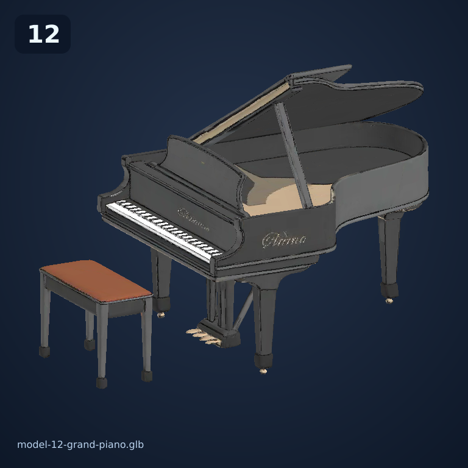
Комната наблюдения и зона отдыха лаборатории.
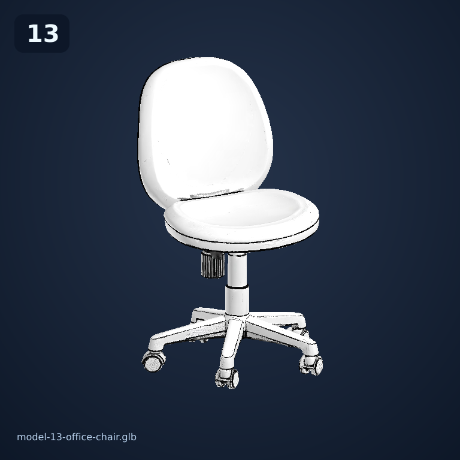
Рабочее место оператора.
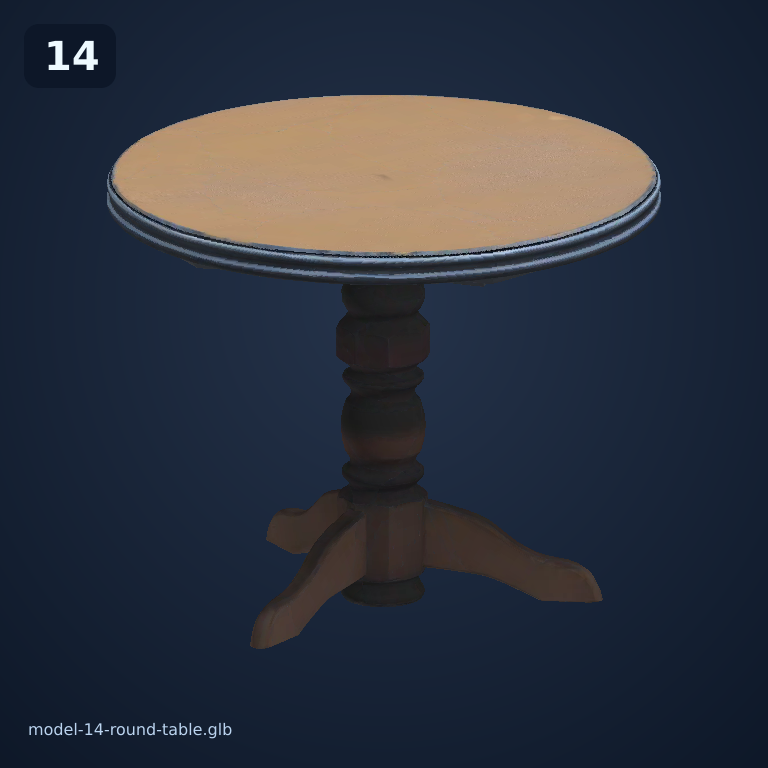
Реквизит зоны отдыха.
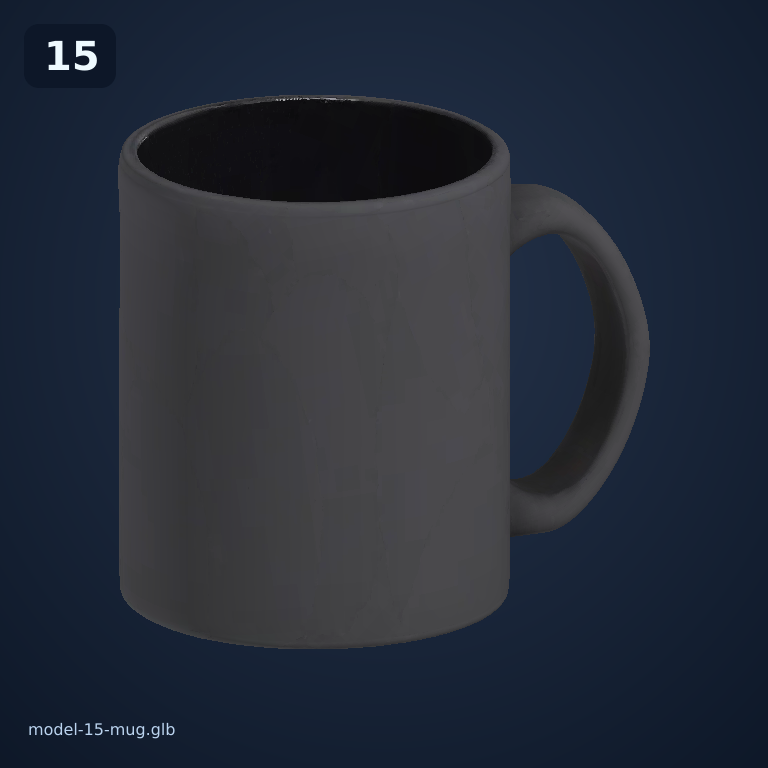
Деталь стола в комнате наблюдения.
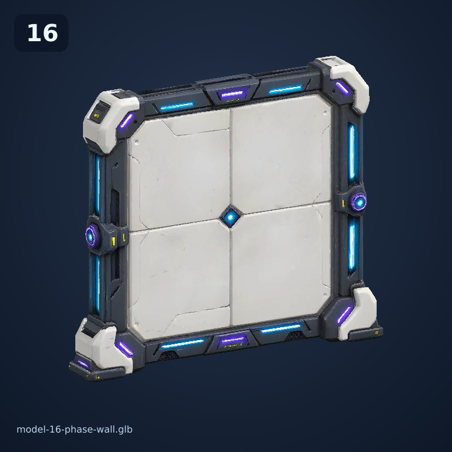
Белая поверхность испытательной камеры.
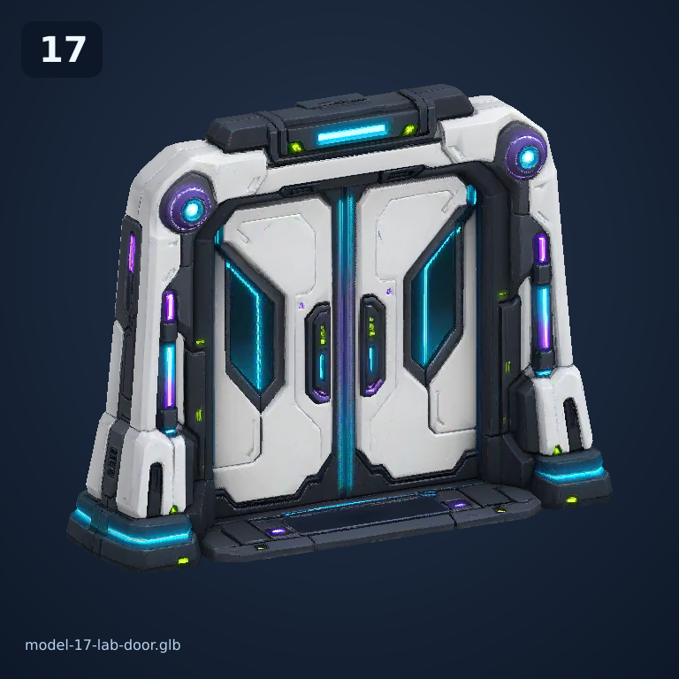
Проход между испытательными камерами.
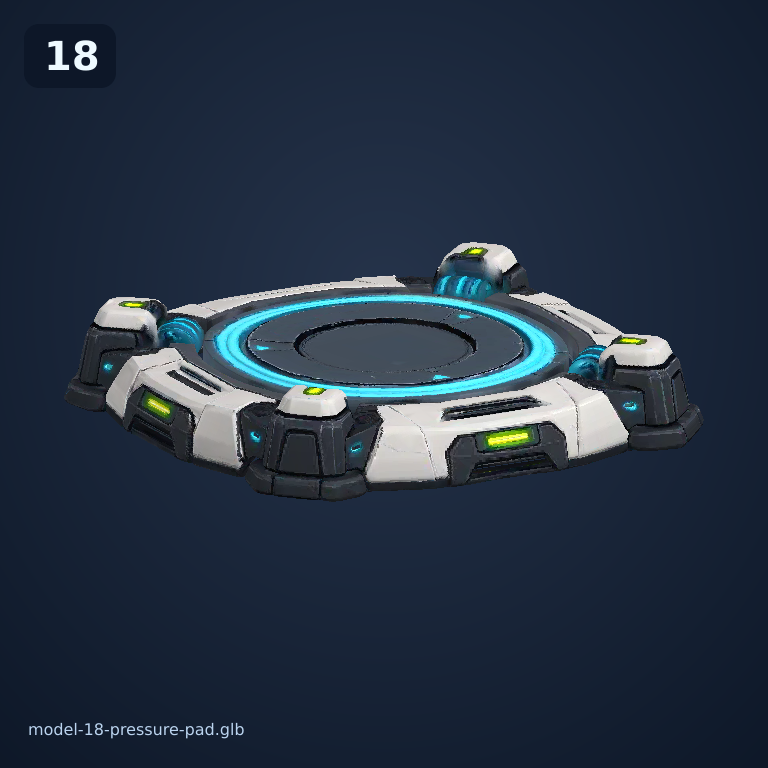
Принимает груз и запускает механизм.
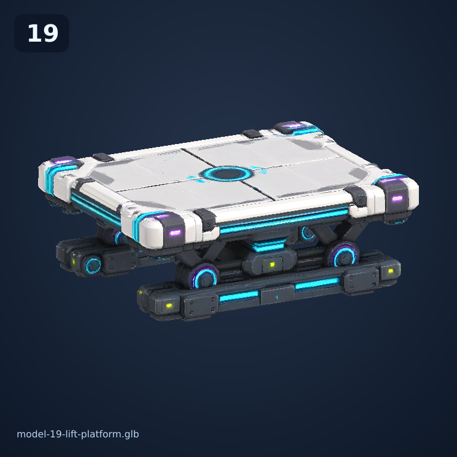
Механическая площадка испытательной камеры.
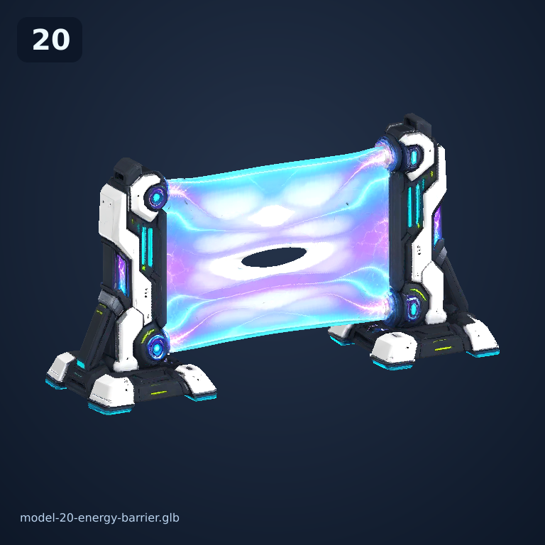
Разделяет зоны испытаний.
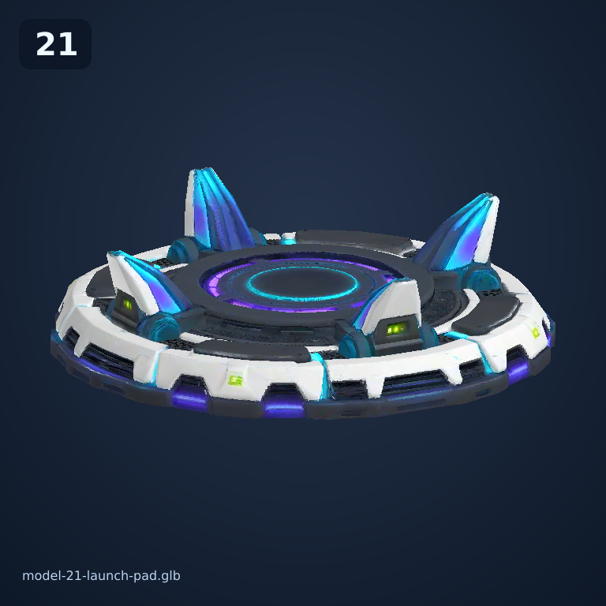
Площадка для разгона и переноса импульса.
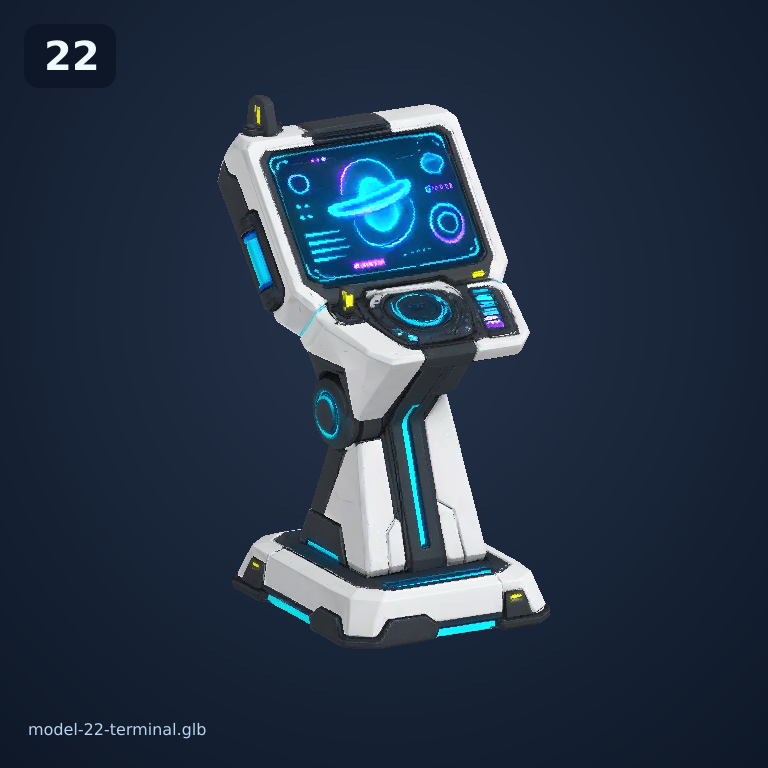
Экран управления лабораторией.
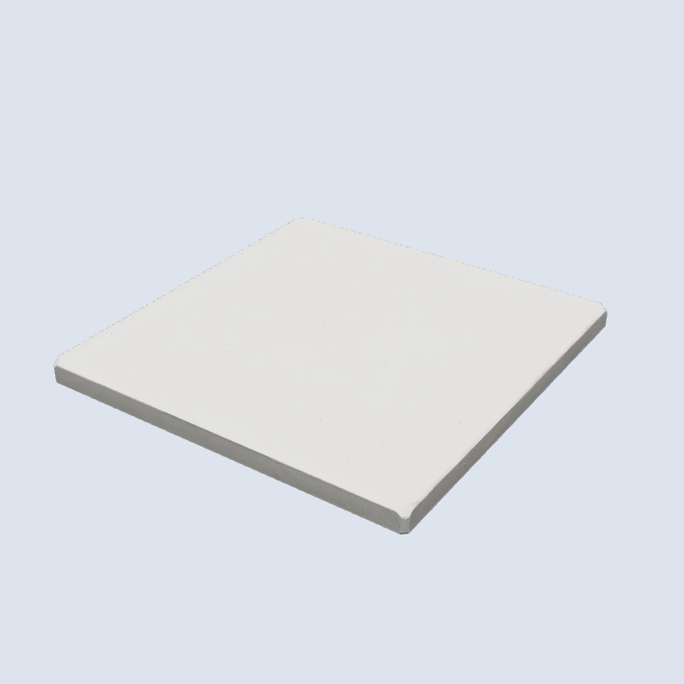
Модуль уровня из новой загрузки.
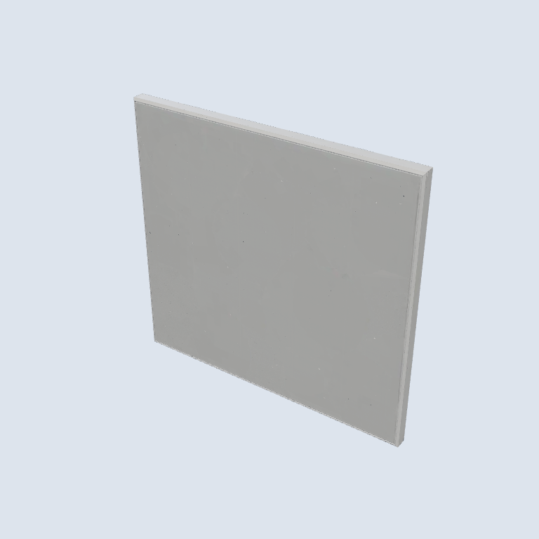
Модуль уровня из новой загрузки.
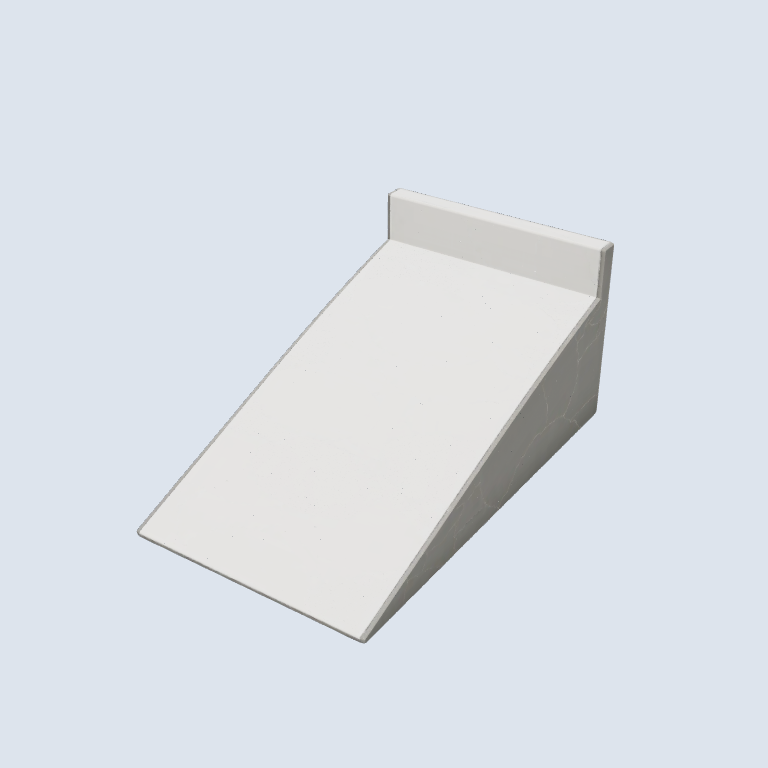
Модуль уровня из новой загрузки.
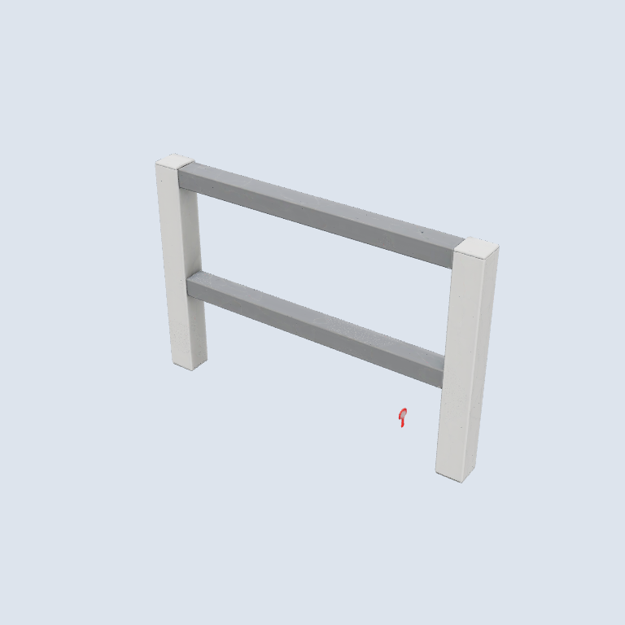
Модуль уровня из новой загрузки.
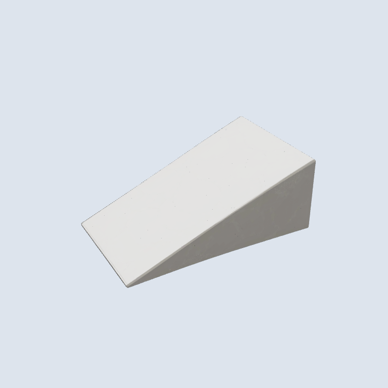
Модуль уровня из новой загрузки.